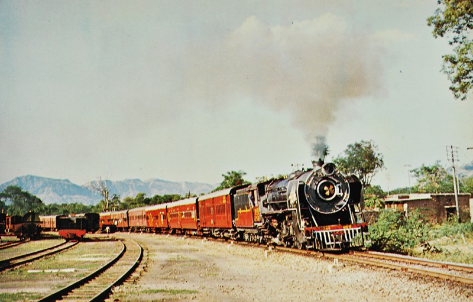
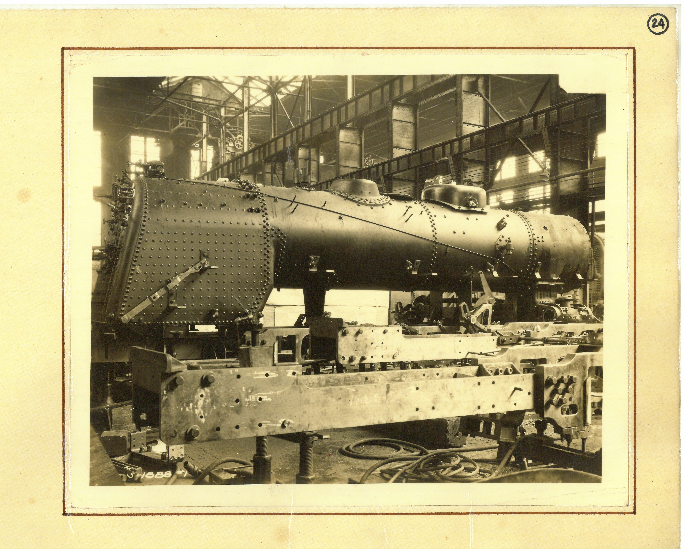
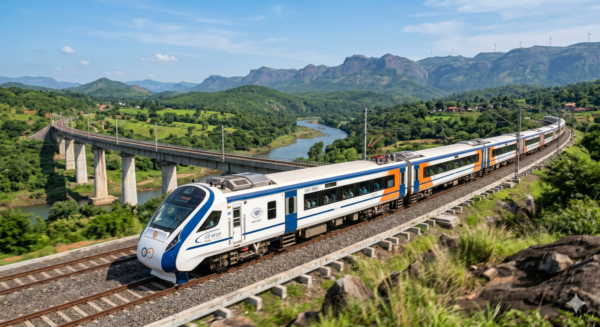

Six Moments That
Defined An Institution
The Workshop
is Born
Alongside the growing network of the Rajputana Malwa Railway, there arose in Ajmer something more permanent than track. The Workshop was established — at first modest in intent, its purpose was maintenance. Inspection, repair, overhaul. Nothing more ambitious was expected of it.
But workshops, like men, are rarely confined to their original purpose. The air carried the smell of oil and hot metal. The sound — always — of hammer on steel. Slowly, the Workshop began to understand.


The F1/734:
Iron Proof
By 1895, intent had hardened into action. From within the Workshop emerged something that had not arrived from overseas, nor been assembled from foreign certainty. The F1 Class, No. 734. Not imported. Built here. Its specifications were precise and uncompromising — a 0–6–0 metre gauge locomotive of 22.05 tons, boiler pressure 140 PSI, tractive force up to 10,301 lbs.
The locomotive ran. And in running, it settled the matter. Ajmer was no longer merely a place where locomotives were repaired. It had become a place where locomotives could be conceived, shaped, and brought to life.
pressure
weight
arrangement

The YB Pacific
& a City's Name
By the 1920s, Ajmer was producing locomotives that reflected both standardisation and adaptation. The G2 Class of 1924–29 — 60 engines, larger boilers, cylinders of 16⅓ inches, boiler pressure 160 PSI — represented a mature stage of design. During both World Wars, engines built at Ajmer were sent abroad to Egypt and Mesopotamia.
Then in 1934 came the crown jewel: the YB Class Pacific — 15 locomotives, named after great cities. City of Ajmer. City of Delhi. City of Bombay. City of Ahmedabad. These were the top-link mainline engines — fast, capable, refined — the peak of passenger locomotive design on metre gauge.
built
built
enters service


The Last
Locomotive
In 1949, the Ajmer Workshop built its last locomotive — an XT1 Class 0–4–2T tank engine. No proclamation marked the moment. No gathering of men stood to witness it. The machine simply moved out, as countless others had done — into service, into distance, into time. And with that, an era closed.
India had changed. Independence had brought new direction. Industrial planning turned toward larger facilities — the establishment of Chittaranjan Locomotive Works signalled a shift. Ajmer was not diminished. It was reassigned. The Workshop turned, as it had turned before, to what was required.
built
manufacture
The Age of
Preservation
The Workshop adapted — as it had always adapted. The knowledge that had once shaped boilers and frames found new purpose in overhaul and maintenance. Steam gave way to diesel. Carriages and wagons became central to its work. Structures reinforced. Components replaced. Designs improved — not in sweeping gestures, but in careful increments.
There are accounts of fitters who could recognise a locomotive not by its number, but by the sound of its motion. Such knowledge does not appear in manuals. It resides in memory. And within the Workshop, that memory was passed — generation to generation — without ever being written down.
phases
per year

150 Years —
Vande Bharat
& Beyond
In 2026, the Workshop marks 150 years of unbroken service. Today it produces over 300 conventional ICF coaches and 760 LHB coaches annually. It overhauls Vande Bharat trainsets — India's most advanced passenger service — and maintains the Palace on Wheels, the jewel of India's heritage tourism rail network.
There is a certain historical symmetry in this: the Workshop which once mastered metre gauge steam now undertakes the overhaul of aerodynamic, electronically driven, high-speed trainsets. The materials have changed. The discipline has not. The spirit has not. Ajmer's Workshop has passed through two major phases of modernisation, and now advances through a third — Vande Bharat's Periodic Overhaul facility, the most ambitious undertaking since the building era of 1895.
per year
rakes POH
excellence